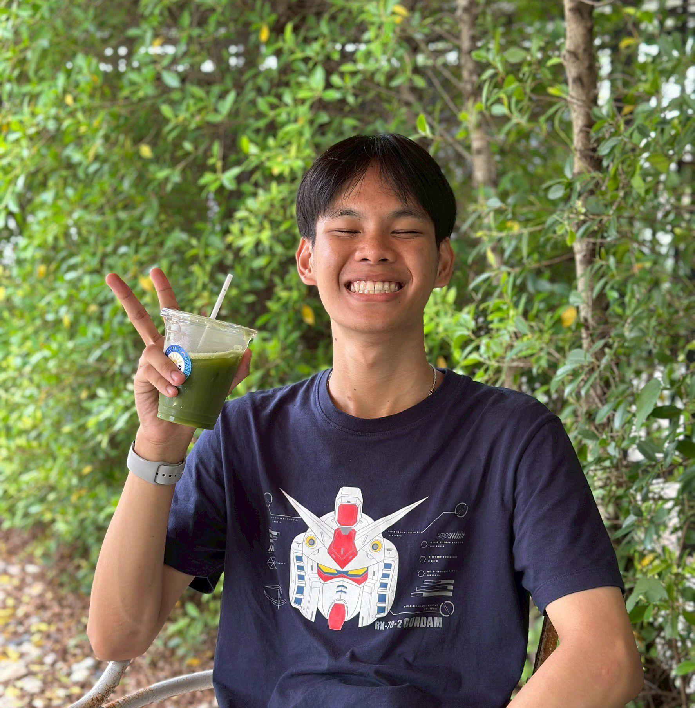

ชื่อเล่น: บอม
สาขาวิชา: เทคโนโลยีดิจิทัลและสารสนเทศ
กลุ่มเรียน: 1.2-2
ฉันอยากเรียนวิชานี้เพราะต้องการเข้าใจการทำงานของเว็บไซต์อย่างครบวงจร ทั้งส่วนของหน้าบ้านและหลังบ้าน และอยากพัฒนาเว็บไซต์ได้ด้วยตัวเอง
ฉันคาดหวังว่าจะได้ฝึกฝนการเขียน HTML และได้ลองสร้างเว็บที่สามารถใช้งานได้จริง พร้อมเรียนรู้การเชื่อมโยงกับเทคโนโลยีอื่นในอนาคต
จุดอ่อนของฉันคือยังไม่ชำนาญในการใช้ JavaScript และเครื่องมือ GitHub ฉันตั้งใจจะฝึกฝนจากการทำโปรเจกต์เล็ก ๆ และเรียนรู้จากแหล่งออนไลน์อย่าง YouTube และ W3Schools
เว็บไซต์ที่ฉันชื่นชอบคือ: Canva